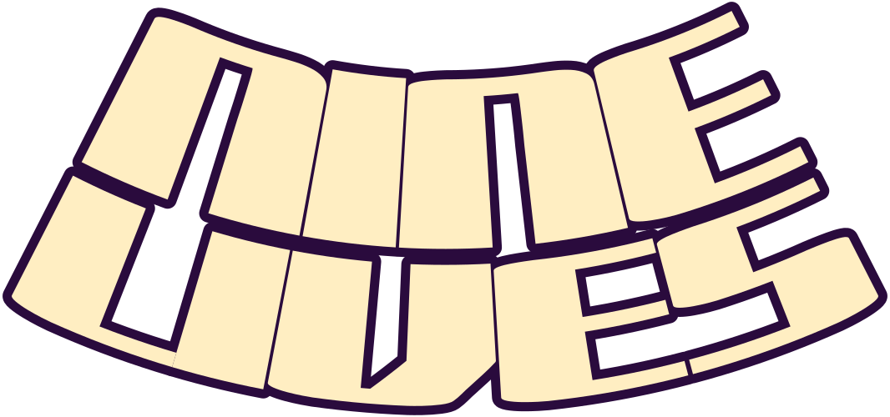

The Halcyon Ballroom · a dance concert in nine colours
1200 Vane Street · doors 8 pm · $14 · halcyon.example
Fri 5 · The Apricot Tide · Lantern Moth · Saffron Freeway · Quiet Ocelot
Sat 6 · Mirror Pond · Honeycomb Kites · Gentle Riot · Velvet Compass · Owl & Ember